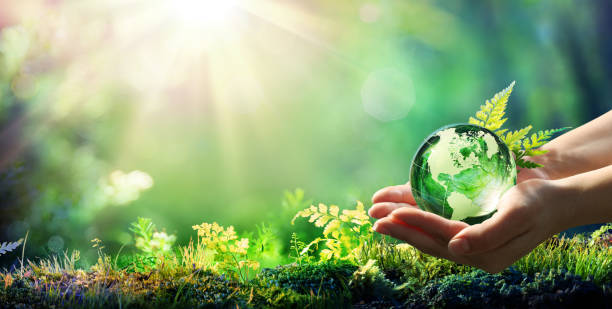

< The Gift Of Our Planet >
The natural environment gives us a wealth of services that are difficult to measure in dollars. Natural areas help clean our air, purify our water, produce food and medicines, reduce chemical and noise pollution, slow floodwaters, and cool our streets. We call this work 'ecosystem services'.It underpins our economy, our society, indeed our very existence. Our forests, rivers, oceans and soils provide us with the food we eat, the air we breathe, the water we irrigate our crops with. We also rely on them for numerous other goods and services we depend on for our health, happiness and prosperity.
With a daily intake of nature made multi tablets, you are investing in a holistic approach to health. The blend of essential vitamins and minerals supports overall growth, boosts immune health, contributes to strong bones and teeth, and promotes healthy eye function.Being in nature can help reduce anxiety, lower blood pressure, enhance immune system function and boost self-esteem and mood.
It have soul, Nature only can love you infinity. without nature, without food, without water you can't live. who make you alive, who protect you, who let you breath that one soul called god. Nature is a form of god!! eventhough you cut a tree a another tree never hate you besides that gives you shadow to take rest, food, air to you with love. the natural disosters are happend becouse of our faults. for avoid these disosters the only way is saving nature. eventhough your rush nature gives you pease of mind and a present moment which is many of us dont have in the busy advanced world!!!.
> How We Harmed Nature <
Humans impact the physical environment in many ways: overpopulation, pollution, burning fossil fuels, and deforestation. Changes like these have triggered climate change, soil erosion, poor air quality, and undrinkable water.Some human activities that cause damage (either directly or indirectly) to the environment on a global scale include population growth, neoliberal economic policies and rapid economic growth, overconsumption, overexploitation, pollution, and deforestation.
Human Activities That Affect The Environment
Deforestation and Habitat Destruction. ...
Fossil Fuel Consumption and Greenhouse Gas Emissions. ...
Industrialization and Air Pollution. ...
Agricultural Practices and Soil Degradation. ...
Water Pollution and Contamination. ...
Overfishing and Marine Ecosystem Depletion.
Leave these all because its too big problems cause by some companies.
I understand that our life is so busy but you are living your life wrong. Dont run just live.peacefull mind is very importand in life. you are taking rest only for your body not for your mind. you have to relax. so if you want to be mentally healthy spend some time atleast 1hr from your 24 hour on weekly once. in that time you can do anything for our bhumadevi or explore and enjoy the beauty of world. she will realy bless you. Nature is the only one non-chemical stress relever. our daily use anti-environmental mechines also spoil nature so as much as you can try to avoid such things like istead of using always vachicle lets go on bycicle to your near by places. thats ok becuse suddently we can't change our life a simple step as you can change the world. Avoid hurting our God by throwing waste on public place, water, burning the wastes that spoils air,using polithine even if you dont do good. remind your self that earth is not only for humans also for other creatures and our children.